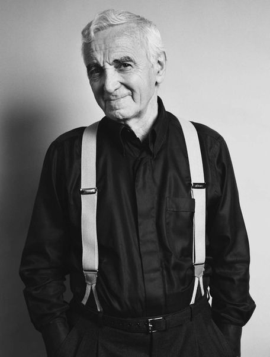

Charles Aznavour
 Charles Aznavour (/ˌæznəˈvʊər/ AZ-nə-VOOR, French: [ʃaʁl aznavuʁ]; born Shahnour Vaghinag Aznavourian, Armenian: Շահնուր Վաղինակ Ազնավուրյան, Shahnur Vaghinak Aznavuryan; 22 May 1924 – 1 October 2018) was a French-Armenian singer, ricist, actor and diplomat. Aznavour was known for his distinctive tenor voice: clear and ringing in its upper reaches, with gravelly and profound low notes. In a career as a composer, singer and songwriter, spanning over 70 years, he recorded more than 1,200 songs interpreted in 9 languages. Moreover, he wrote or co-wrote more than 1,000 songs for himself and others. One of France's most popular and enduring singers, Aznavour sold between 180 and 200 million records during his lifetime, making him one of the best-selling music artists of all time. He was dubbed France's Frank Sinatra, while music critic Stephen Holden described Aznavour as a "French pop deity". He was also arguably the most famous Armenian of his time. In 1998, Aznavour was named Entertainer of the Century by CNN and users of Time Online from around the globe. He was recognized as the century's outstanding performer, with nearly 18% of the total vote, edging out Elvis Presley and Bob Dylan. Jean Cocteau once said: "Before Aznavour despair was unpopular". Aznavour sang for presidents, popes and royalty, as well as at humanitarian events. In response to the 1988 Armenian earthquake, he founded the charitable organization Aznavour for Armenia along with his long-time friend impresario Levon Sayan. In 2008, he was granted Armenian citizenship, and was appointed ambassador of Armenia to Switzerland the following year, as well as Armenia's permanent delegate to the United Nations at Geneva. He started his last world tour in 2014. On 24 August 2017, Aznavour was awarded he 2,618th star on the Hollywood Walk of Fame. Later that year, he and his sister were awarded the Raoul Wallenberg Award for sheltering Jews during World War II. His last concert took place in the NHK Hall in Osaka on 19 September 2018. He died on 1 October 2018, aged 94.
Career
Aznavour was already familiar with performing on stage by the time he began
his career as a musician. At the age of nine, he had roles in a play called
Un Petit Diable à Paris and a film entitled La Guerre des Gosses.
Aznavour then turned to professional dancing and performed in several
nightclubs. In 1944, he and actor Pierre Roche began a partnership and in
collaborative efforts performed in numerous nightclubs. It was through this
partnership that Aznavour began to write songs and sing. The partnership's
first successes were in Canada in 1948-1950. Meanwhile, Aznavour wrote his
first song entitled J'ai Bu in 1950. Aznavour in 1963 During the early stages
of his career, Aznavour opened for Edith Piaf at the Moulin Rouge. Piaf then
advised him to pursue a career in singing. Piaf helped Aznavour develop
a distinctive voice that stimulated the best of his abilities.Sometimes described
as "France's Frank Sinatra",Aznavour sang frequently about love. He wrote or
co-wrote musicals, more than one thousand songs, and recorded ninety-one studio
albums. Aznavour's voice was shaded towards the tenor range, but possessed the
low range and coloration more typical of a baritone, contributing to his unique
sound. Aznavour spoke and sang in many languages (French, English, Italian, Spanish,
German, Russian, Armenian, Neapolitan and Kabyle), which helped him perform at Carnegie
Hall, in the US, and other major venues around the world. He also recorded at least one
song from the 18th-century Armenian poet Sayat-Nova, and a popular song, Im Yare in Armenian.
"Que C'est Triste Venise", sung in French, Italian ("Com'è Triste Venezia"), Spanish ("Venecia Sin Ti"),
English ("How Sad Venice Can Be") and German ("Venedig in Grau"), was very successful the mid 1960s.
1972 saw the release of his 23rd studio album, "Idiote je t'aime...", which contained among others,
two of his classics - Les plaisirs démodés (Old-Fashioned Pleasures) et Comme ils disent (As They Say),
the latter dealing with homosexuality, which at the time, was revolutionary.In 1974, Aznavour became
a major success in the United Kingdom when his song "She" was number 1 on the UK Singles Chart for
four weeks during a fourteen-week run. His other well-known song in the UK was the 1973 "The Old
Fashioned Way", which was on UK charts for 15 weeks. Artists who have recorded his songs and collaborated
with Aznavour include Édith Piaf, Fred Astaire, Frank Sinatra (Aznavour was one of the
are European singers invited to duet with him), Andrea Bocelli, Bing Crosby, Ray
Charles, Bob Dylan (he named Aznavour among the greatest live performers he had
ever seen), Dusty Springfield, Liza Minnelli, Mia Martini, Elton John, Dalida,
Serge Gainsbourg, Josh Groban, Petula Clark, Tom Jones, Shirley Bassey, José
Carreras, Laura Pausini, Roy Clark, Nana Mouskouri and Julio Iglesias. Fellow
French pop singer Mireille Mathieu sang and recorded with Aznavour on numerous
occasions. The English singer Marc Almond was noted by Aznavour as his favourite
nterpreter of his songs, having covered Aznavour's "What makes a man a man" in the
90s. Almond citing Aznavour as a major influence on his style and work. In 1974,
Jack Jones recorded an entire album of Aznavour compositions entitled Write Me A
Love Song, Charlie, re-released on CD in 2006. Two years later, in 1976, Dutch singer
iesbeth List released her album Charles Aznavour Presents Liesbeth List, which featured
Aznavour's compositions with English lyrics. Aznavour and Italian tenor Luciano
Pavarotti sang Gounod's aria "Ave Maria" together. He performed with Russian cellist
and friend Mstislav Rostropovich to inaugurate the French presidency of the European
Union in 1995. Elvis Costello recorded "She" for the film Notting Hill. One of
Aznavour's greatest friends and collaborators from the music industry was Spanish
operatic tenor Plácido Domingo, who often performs his hits, most notably a solo
studio recording of "Les bâteaux sont partis" in 1985 and duet versions of the song
in French and Spanish in 2008, as well as multiple live renditions of Aznavour's
"Ave Maria". In 1994, Aznavour performed with Domingo again and Norwegian soprano
Sissel Kyrkjebø at Domingo's third annual Christmas in Vienna concert. The three
singers performed a variety of carols, medleys and duets, and the concert was
televised throughout the world, as well as released on a CD internationally.
t the start of autumn 2006, Aznavour initiated his farewell tour, performing in the
US and Canada, and earning very positive reviews. Aznavour started 2007 with concerts
all over Japan and Asia. The second half of 2007 saw Aznavour return to Paris for over
20 shows at the Palais des Congrès in Paris, followed by more touring in Belgium, the
Netherlands, and the rest of France. Aznavour had repeatedly stated that this farewell
tour, health permitting, would likely last beyond 2010; after that, however, Charle
Aznavour continued performing worldwide throughout the year. At 84, 60 years on stage
ade him "a little hard of hearing".[43] In his final years he would still sing in multiple
languages and without persistent use of teleprompters, but typically he would stick to just
two or three (French and English being the primary two, with Spanish or Italian being the third)
during most concerts.[44] On 30 September 2006, Aznavour performed a major concert in Yerevan, the capital of Armenia, to start off the cultural season "Arménie mon amie". Then Armenian president Robert Kocharyan and his French counterpart Jacques Chirac, at the time on an official visit to Armenia, were in front-row attendance.
Aznavour at the 1999 Cannes Film Festival In 2006, Aznavour recorded his album Colore
ma vie in Cuba, with Chucho Valdés.A regular guest vocalist on Star Academy, Aznavour
sang alongside contestant Cyril Cinélu that same year.[47] In 2007, he sang part of
"Une vie d'amour" in Russian during a Moscow concert. Later, in July 2007, Aznavour
was invited to perform at the Vieilles Charrues Festival.Forever Cool (2007), an album
from Capitol/EMI, features Aznavour singing a new duet of "Everybody Loves Somebody
Sometime" with the voice of Dean Martin.Aznavour finished a tour of Portugal in February
2008. Throughout the spring of 2008, Aznavour toured South America, holding a multitude
of concerts in Argentina, Brazil, Chile and Uruguay.
Armenian activism
Since the 1988 Armenian earthquake, Aznavour helped the country through
his charity, Aznavour for Armenia. Together with his brother in-law and
co-author Georges Garvarentz he wrote the song "Pour toi Arménie", which
was performed by a group of famous French artists and topped the charts
for eighteen weeks. There is a square named after him in central Yerevan
on Abovian Street, and a statue erected in Gyumri, which saw the most
lives lost in the earthquake. In 1995 Aznavour was appointed an Ambassador
and Permanent Delegate of Armenia to UNESCO. Aznavour was a member of the
Armenia Fund International Board of Trustees. The organization has rendered
more than $150 million in humanitarian aid and infrastructure development
assistance to Armenia since 1992. He was appointed as "Officier" (Officer)
of the Légion d'honneur in 1997.In 2002, Aznavour appeared in director
Atom Egoyan's acclaimed film Ararat, about the genocide of Armenians
in the Ottoman Empire in the early 20th century.
In 2004, Aznavour received the title of National Hero of Armenia,
Armenia's highest award. On 26 December 2008, President of Armenia
Serzh Sargsyan signed a presidential decree for granting citizenship
of Armenia to Aznavour whom he called a "prominent singer and public
figure" and "a hero of the Armenian people".
In 2011, the Charles Aznavour Museum opened in Yerevan.
In April 2016, Aznavour visited Armenia to participate in the Aurora
Prize Award ceremony. On 24 April, along with Serzh Sargsyan, the
Catholicos of All Armenians, Garegin II and actor George Clooney, he
laid flowers at the Armenian Genocide Memorial.
In October 2016 Aznavour joined other prominent Armenians on calling
the government of Armenia to adopt "new development strategies based
on inclusiveness and collective action" and to create "an opportunity
for the Armenian world to pivot toward a future of prosperity, to
transform the post-Soviet Armenian Republic into a vibrant, modern,
secure, peaceful and progressive homeland for a global nation."
Along with holding the mostly ceremonial title of French
ambassador-at-large to Armenia, Aznavour agreed to hold the position
of Ambassador of Armenia to Switzerland on 12 February 2009:
First I hesitated, as it is not an easy task. Then I thought that what
is important for Armenia is important for us. I have accepted the proposal with
love, happiness and feeling of deep dignity.
He wrote a song about the Armenian Genocide, entitled "Ils sont tombés"
(known in English as "They fell").
Political involvement
Aznavour was increasingly involved in French, Armenian and
international politics as his career progressed. During the 2002
French presidential elections, when far-right nationalist Jean-Marie
Le Pen of the National Front made it into the runoff election, facing
cumbent Jacques Chirac, Aznavour signed the "Vive la France" petition,
and called on all French to "sing the Marseillaise" in protest. Chirac,
a personal friend of Aznavour's, ended up winning in a landslide,
carrying over 82% of the vote.
He frequently campaigned for international copyright law reform.
In November 2005 he met with then President of the European
Commission José Manuel Barroso[82] on the issue of the review
of term of protection for performers and producers in the EU,
advocating an extension of the EU's term of protection from the
current 50 years to the United States' law allowing 95 years, saying
"[o]n term of protection, artists and record companies are of the
same mind. Extension of term of protection would be good for European
lture, positive for the European economy and would put an end the
current discrimination with the U.S." He also notably butted heads
with French politician Christine Boutin over her defense of a "global
license" flat-fee authorization for sharing of copyrighted files over
the internet, claiming that the license would eliminate creativity.
In May 2009, the French Senate approved one of the strictest internet
anti-piracy bills ever with a landslide 189–14 vote. Aznavour was a
vocal proponent of the measure and considered it a rousing victory:
Personal life
Aznavour was married three times: to Micheline Rugel (in 1946),Evelyn
Plessis (in 1956) and his widow, Ulla Thorsell (in 1967). Five children
were produced by these marriages: Seda, Patrick, Katia, Mischa, and
Nicolas.A sixth child, Charles Jr., supposedly born in 1952, was invented
by Yves Salgues, who was Aznavour's first official biographer, but also a
heroin addict.[citation needed]
Aznavour often joked about his physique, the most talked-about aspect of
which was his height; he stood 160 cm (5 ft 3 in) tall. He made this a
source of self-deprecating humour over the years.
In April 2018, shortly before his 94th birthday, Aznavour was taken to
hospital in Saint Petersburg after straining his back during a rehearsal
prior to a concert in the city. The concert was postponed until the
following season, but eventually cancelled since he died six months later.
On 5 May 2018, he was a guest on BBC Radio 2's Graham Norton.
A week later, on 12 May, he broke his arm in two places in a fall at
his home in the village of Mouriès, resulting in the cancellation of
all shows until the end of June. This was eventually extended to
include the 18 shows scheduled for August, because of a longer healing
rocess.In a program on French television broadcast on 28 September,
ly three days before his death, he mentioned that he was still feeling the
pain.
Death and funeral
On 1 October 2018, Aznavour was found dead in a bathtub at his home at
Mouriès at the age of 94.At the time of his death his tax residence was
in Saint-Sulpice, Vaud, Switzerland.The autopsy report concluded that
Aznavour died of cardiorespiratory arrest complicated by an acute
pulmonary edema.A requiem mass for him was held on October 6 by
Catholicos Karekin II at the Armenian Cathedral of St. John the Baptist
in Paris.
On 5 October, Aznavour was honoured with a state funeral at Les
Invalides military complex in Paris, with president Emmanuel Macron
lauding him as one of the most important “faces of France”. He praised
znavour's lyrics, which he said appealed to "our secret fragility" and
said the singer's words were "for millions of people a balm, a remedy,
a comfort ... For so many decades, he has made our life sweeter, our
tears less bitter." His coffin was lifted away at the end to the sound
of his hit song "Emmenez-Moi" (Take Me Along).Dignitaries attending the
funeral also included French Prime Minister Édouard Philippe, former
presidents Nicolas Sarkozy and François Hollande, as well as Armenian
President Armen Sarkissian and Prime Minister Nikol Pashinyan and their
wives.
He is buried in the family crypt at the Montfort-l'Amaury cemetery.
Awards
- 1963, 1971, and 1980 – Edison Awards (three-time award winner)
- 1971 – Golden Lion Honorary Award at the Venice Film Festival for the Italian version of the song Mourir d'aimer
- 1995 – Ambassador of Goodwill and Permanent Delegate of Armenia to UNESCO
- 1996 – Induction into the Songwriters Hall of Fame
- 1997 – French Victoire award for Male Artist of the Year
- 1997 – Honorary César Award
- 2009 – MIDEM Lifetime Achievement Award
- 2009 – Grigor Lusavorich award of Nagorno-Karabakh Republic
- 2009 – Honorary Doctorate from the University of Montreal
- 2010 – Honorary order from Russia "For contributing to strengthening cultural relations between Russia and France"
- 2014 – Special Prize named after Rouben Mamoulian of the "Hayak" National Film Awards in Armenia for "his great contribution to world cinema"
- 2016 – Star on the Hollywood Walk of Fame for Live Performance, located at 6225 Hollywood Boulevard.
Honours
- 1995 – Grand Medal of the French Academy
- 1997 – Officier (Officer) of the Legion of Honour
- 2004 – Commandeur (Commander) of the Legion of Honour
- 2004 – National Hero of Armenia[
- 2004 – Officer of the Order of Leopold
- 2008 – Honorary Officer of the Order of Canada
- 2008 – Citizenship of Armenia
- 2009 – Officer of the National Order of Quebec
- 2015 – Commander in the Belgian Order of the Crown
- 2017 – Raoul Wallenberg Medal
- 2018 - Order of the Rising Sun